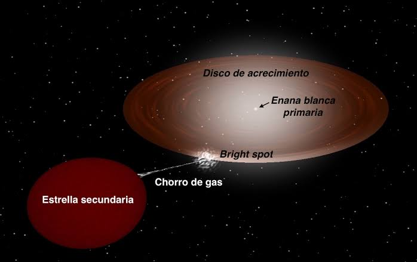
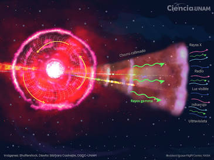
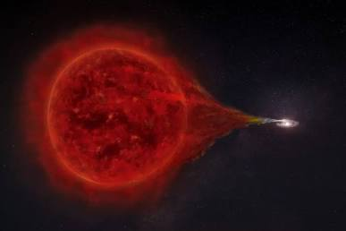
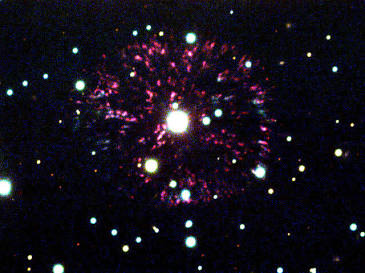
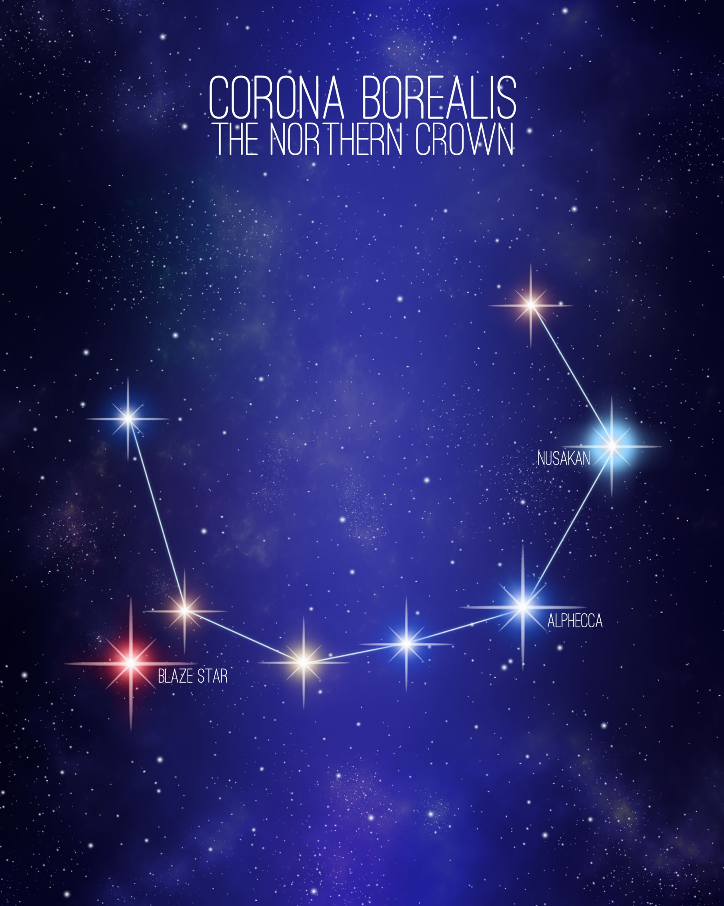

Para comprender la naturaleza destructiva de las novas y los sistemas estelares cataclísmicos, es necesario definir primero qué es un sistema binario interactivo y cómo se produce este repentino y violento estallido de luz. Una nova no representa la muerte o la destrucción total de una estrella, como ocurre en una supernova, sino una erupción termonuclear explosiva que se desata en la superficie de una enana blanca, el remanente denso y compacto de una estrella de masa baja que ha agotado su combustible nuclear. Este fenómeno se desencadena cuando la enana blanca comparte un sistema orbital binario estrecho con una estrella compañera, habitualmente una gigante roja o una estrella de secuencia principal que desborda su gas a través del punto de Lagrange interior debido a las fuerzas de marea gravitacionales. A medida que el hidrógeno de la compañera fluye y se acumula en la superficie de la enana blanca, la presión y la temperatura se elevan de manera exponencial hasta alcanzar aproximadamente diez millones de grados kelvin, momento en el cual se enciende una reacción termonuclear descontrolada que quema todo el hidrógeno acumulado en cuestión de horas y expulsa gas al medio interestelar a velocidades de varios miles de kilómetros por segundo.

A partir de esta definición, el peligro potencial que albergan estos sistemas radica en la imprevisibilidad de sus ciclos y en la inmensa cantidad de energía electromagnética que liberan durante el estallido. Aunque una nova incrementa el brillo del sistema estelar en miles o cientos de miles de veces sin desintegrar el núcleo central, la radiación resultante en forma de pulsos intensos de rayos X, rayos gamma y radiación ultravioleta extrema constituye una amenaza letal para cualquier mundo situado en su vecindad orbital. Si un sistema planetario albergara vida y orbitara lo suficientemente cerca de una nova, el torrente energético inicial despojaría al planeta de su capa de ozono atmosférico en cuestión de días, exponiendo la superficie a niveles letales de radiación ionizante y esterilizando la biósfera de manera irreversible, lo que demuestra que incluso los sistemas estelares que no colapsan por completo pueden convertirse en agentes de devastación local.

Dentro de la astrofísica observacional, uno de los ejemplos más notables y estudiados de este fenómeno es RS Ophiuchi, un sistema binario simbiótico ubicado a unos cinco mil años luz de la Tierra que contiene una enana blanca masiva y una gigante roja. RS Ophiuchi es clasificada como una nova recurrente, lo que significa que experimenta erupciones violentas periódicas aproximadamente cada década o dos décadas, habiendo registrado explosiones importantes en los años mil novecientos ochenta y cinco, dos mil seis y dos mil veintiuno. Durante cada uno de estos estallidos, la onda de choque generada por la eyección de materia choca contra el viento estelar de la gigante roja circundante, acelerando partículas a velocidades relativistas y emitiendo potentes destellos de rayos gamma de alta energía que han sido detectados por telescopios espaciales modernos, evidenciando la violencia extrema que caracteriza estos procesos interactivos.

Otro ejemplo histórico de gran relevancia científica es GK Persei, también conocida como la Nova Persei de mil novecientos uno, la cual brilló con una intensidad tal que se convirtió temporalmente en una de las estrellas más brillantes del cielo nocturno visible a simple vista. Ubicada a unos mil quinientos años luz de la Tierra, esta nova arrojó al espacio una nebulosa de gas en expansión conocida como el remanente de GK Persei, cuya estructura filamentosa y colisión continua con el medio interestelar circundante ha permitido a los astrónomos estudiar en detalle la dinámica de la onda expansiva y los mecanismos de transferencia de masa en sistemas estelares evolucionados a lo largo de más de un siglo de observaciones astronómicas continuas.

Asimismo, destaca el sistema T Coronae Borealis, conocido popularmente como la estrella blasante, ubicado a unos tres mil años luz de la Tierra. Se trata de una nova recurrente cuyo ciclo eruptivo se repite con una regularidad notable cada ochenta años, habiendo registrado estallidos históricos documentados con precisión. La física detrás de este sistema muestra cómo la acumulación constante de materia en la superficie de la enana blanca alcanza un punto crítico de degeneración térmica que desencadena una detonación cataclísmica predecible pero incontenible, sirviendo como un laboratorio natural fundamental para entender los procesos de acreción estelar y los límites termodinámicos de la materia degenerada en el universo.
